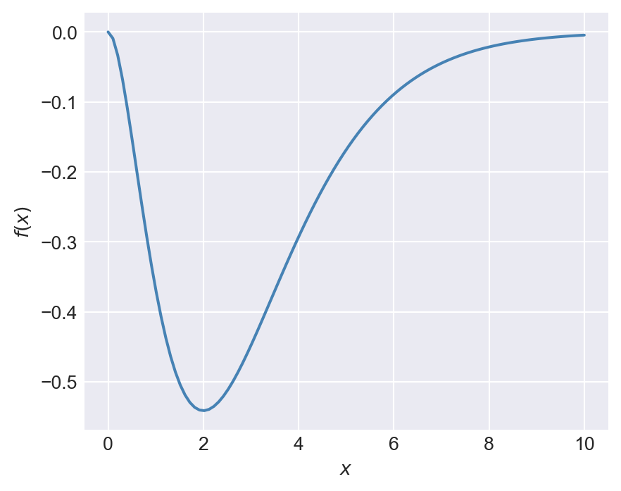
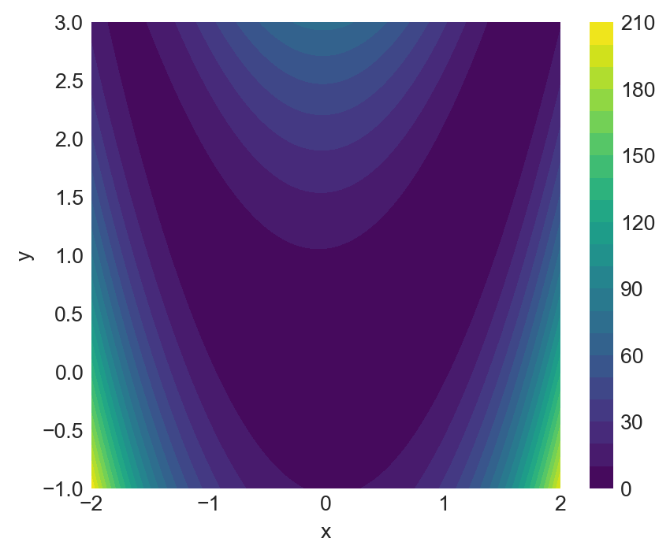
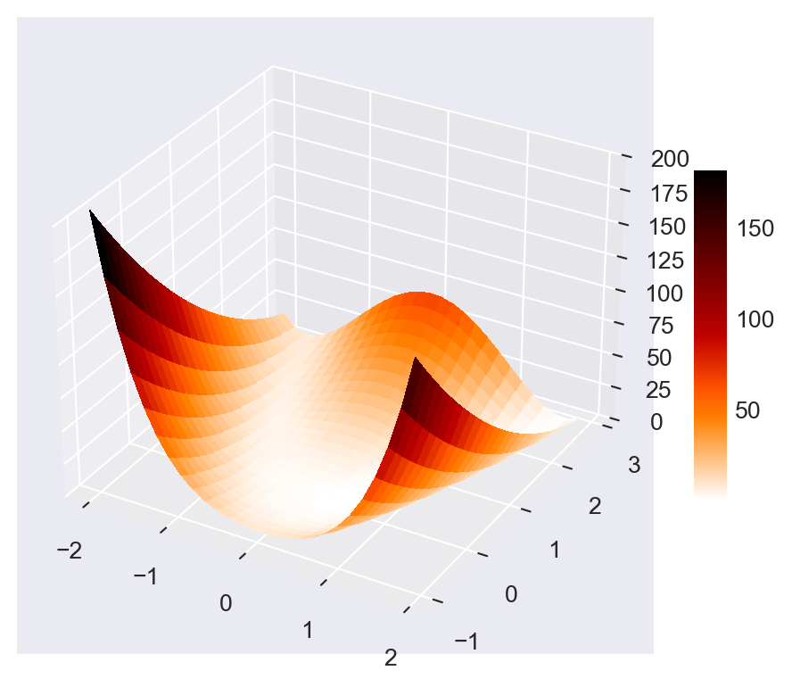

import numpy as np
import scipy.stats as stats
import scipy.optimize as optimize
import pandas as pd
import matplotlib.pyplot as plt
from matplotlib import cm
plt.style.use('seaborn-v0_8-darkgrid')5 Statistical Functions
5.1 Introduction
In this chapter, we first introduce statistical functions from NumPy and SciPy. These libraries offer a wide range of tools for generating random numbers, evaluating probability density and cumulative distribution functions, and determining quantiles/percentiles. We then explore optimization and root-finding functions available in SciPy.
5.2 NumPy statistical functions
The random number generators in NumPy are all stored in the submodule np.random. The key functions are listed below.
rand/random_sample: Generates uniform random numbers from \([0, 1)\).randn/standard_normal: Generates random numbers from the standard normal distribution.randint/random_integers: Generates random integer from the interval[low,high).shuffle: Randomly reorders the elements of an array in place.permutation: Returns randomly reordered elements of an array.binomial: Draw samples from the binomial distribution.chisquare: Generates draws from the chi-squared distribution.exponential: Generates a draw from the exponential distribution.f(v_1,v_2): Generates draws from \(F_{v_1,v_2}\) distribution.gamma: Generates draws from gamma distribution.laplace: Generates draws from the Laplace (Double Exponential) distribution.lognormal: Generates draws from the log-normal distribution.multinomial: Generates draws from the multinomial distribution.multivariate_normal: Generates draws from the multivariate normal distribution.normal: Generates from the normal distribution.poisson: Generates from the poisson distribution.standard_t: Generates draws from the Student’s \(t\) distribution.uniform: Generates draws from the interval \((0,1)\).
Some illustrative examples are provided below.
# Generate 3x2x3 array of draws from the uniform distribution on [0,1)
x = np.random.rand(3, 2, 3)
xarray([[[0.2874544 , 0.80881193, 0.95971886],
[0.43911861, 0.2644765 , 0.54531665]],
[[0.83466171, 0.05206236, 0.16116873],
[0.04260948, 0.0053757 , 0.37884922]],
[[0.97719024, 0.16863573, 0.68919887],
[0.553627 , 0.29353745, 0.09474167]]])# Generate 3x2 array of draws from the standard normal distribution
y = np.random.standard_normal((3, 2))
yarray([[ 0.06119195, -0.02129899],
[-0.28799024, 0.0891746 ],
[ 0.52285773, 0.57279645]])# Randomly order the elements of an array
x = np.arange(10)
np.random.shuffle(x)
xarray([3, 9, 8, 7, 5, 0, 4, 6, 2, 1])# Generate 10 draws from N(mu, sigma)
mu, sigma = 2, 1.5
s = np.random.normal(mu, sigma, 10)
sarray([-0.64055754, -0.54146874, 1.45642873, 3.69117893, 5.27574522,
0.22006583, 2.50140454, 0.45741679, 1.74725663, 0.50157746])# Generate 20 draws from Binomial(n, p)
n, p = 10, 0.5 # number of trials, probability of each trial
s = np.random.binomial(n, p, 20)
sarray([4, 4, 4, 7, 4, 4, 5, 3, 9, 5, 6, 3, 3, 4, 6, 4, 1, 4, 4, 4])# Generate 4 draws from the chi-squared distribution with 2 degrees of freedom
nu, n = 2, 4 # degrees of freedom, number of draws
np.random.chisquare(nu, n)array([0.59588492, 3.29344885, 4.28623073, 2.06828554])# Generate 5 draws from the Student's t distribution with 10 degrees of freedom
np.random.standard_t(df=10, size=5)array([-2.05722723, 0.33383089, -0.89291544, -1.65027523, -0.25693324])Computer-simulated random numbers are not truly random; they are generally referred to as pseudo-random numbers. The function np.random.seed() is useful for initializing the random number generator, allowing for the generation of the same sequence of random numbers by setting the seed. In the example below, we set the seed to 12345 and generate 5 random draws from the standard normal distribution twice. Since we use the same seed in each case, we obtain the same random numbers in both instances.
# Set the seed for reproducibility
np.random.seed(12345)
x = np.random.randn(5)
x
np.random.seed(12345)
y = np.random.randn(5)
yarray([-0.20470766, 0.47894334, -0.51943872, -0.5557303 , 1.96578057])array([-0.20470766, 0.47894334, -0.51943872, -0.5557303 , 1.96578057])5.3 SciPy statistical functions
The probability distribution functions in SciPy are stored in the scipy.stats module. We import this module under the alias stats. We list some of important distributions from this module below:
norm: Normal distribution.beta: Beta distribution.cauchy: Cauchy distribution.chi2: Chi-squared distribution.expon: Exponential distribution.exponpow: Exponential power distribution.f: F distribution.Gamma: Gamma distribution.laplace: Laplace, double exponential distribution.lognorm: Lognormal distribution.t: Student’s t distribution.
These distribution functions assume the following methods:
rvs: Generates pseudo-random numbers.pdf: Returns probability density function.logpdf: Returns log probability density function.cdf: Returns cumulative distribution function.ppf: Inverse CDF evaluation for an array of values between 0 and 1.fit: Estimates shape, location, and scale parameters from data by maximum likelihood using an array of data.median/mean: Returns median/mean of the distribution.var/std: Returns variance/standard deviation of the distribution.moment: Returns the \(n\)th non-central moment of the distribution.
The documentation on these methods is given at Statistical functions. Some illustrative examples are shown below.
# Generate 4 draws from N(2,9)
stats.norm.rvs(loc=2, scale=3, size=4)array([6.1802175 , 2.27872363, 2.84523846, 4.3070677 ])# Evaluate the pdf of the standard normal distribution at 1.96
stats.norm.pdf(1.96, loc=0, scale=1)0.058440944333451476# Evaluate the cdf of the standard normal distribution at -1.96
stats.norm.cdf(-1.96, loc=0, scale=1)0.024997895148220435# Return the 0.95 quantile of N(0,1)
stats.norm.ppf(0.95, loc=0, scale=1)1.6448536269514722# Fit the normal distribution to data
x = stats.norm.rvs(loc=1, scale=5, size=1000)
location, scale = stats.norm.fit(x)
print("(location, scale)=", (location, scale))(location, scale)= (0.9694060807470053, 4.905952684899126)# Return the median of N(3,1)
stats.norm.median(loc=3, scale=1)3.0# Return the mean of N(3,4)
stats.norm.mean(loc=3, scale=2)3.0# Return the mean of chi-squared distribution with 4 degrees of freedom
stats.chi2.mean(df=4)4.0# Return the variance of N(3,4)
stats.norm.var(loc=3, scale=2)4.0# Return the standard deviation of N(3,4)
stats.norm.std(loc=3, scale=2)2.0# Return the second non-central moment of N(0,1)
stats.norm.moment(2, loc=0, scale=1)1.05.4 Optimization and root finding
SciPy includes several optimization and root-finding functions in the scipy.optimize module. Some of these functions are listed below.
optimize_scalar: Minimizes a scalar function of one variable.optimize.minimize: Minimizes a scalar function of one or more variables.optimize.linprog: Minimizes a linear objection function subject to linear equality and inequality constraints.optimize.root_scalar: Finds a root of a scalar function of one variable.optimize.root: Finds a root of a vector function.
The syntax for the optimize_scalar function is as follows:
optimize_scalar(fun, bracket=None, bounds=None, args=(), method='brent', tol=None, options=None)Here, fun is the objective function to be minimized. The bracket argument is a tuple specifying the interval that contains a minimum of the function. The bounds argument is a tuple specifying the bounds on the variable for the bounded minimization method. The method argument specifies the type of solver. It can take one of the following values: 'brent', 'bounded', or 'golden'.
Consider the following function: \[ f(x)=-x^2e^{-x},\, 0\leq x\leq 10. \]
# Plot the function f(x) = -x^2 * exp(-x)
x = np.linspace(0, 10, 100)
y = -x**2 * np.exp(-x)
plt.figure(figsize=(5, 4))
plt.plot(x, y, linewidth=1.5, color='steelblue')
#plt.title("Plot of $f(x)=-x^2e^{-x}$")
plt.xlabel("$x$")
plt.ylabel("$f(x)$")
plt.show()
Figure 5.1 indicates that the function has a minimum at \(x=2\). We can use the minimize_scalar function to confirm that \(x=2\) is indeed the minimum. In the code below, we first define the function f(x), then use the minimize_scalar function with the bounded method to find the value of \(x\) that minimizes \(f(x)\) over the interval \([0, 10]\).
# Define the objective function
def f(x):
return -x**2 * np.exp(-x)
# Minimize the function using the 'bounded' method within the interval [0, 10]
result = optimize.minimize_scalar(f, bounds=(0, 10), method='bounded')
# Print the result
print("x that minimizes f(x):", result.x.round(4))
print("Minimum value of f(x):", result.fun.round(4))x that minimizes f(x): 2.0
Minimum value of f(x): -0.5413The syntax for the minimize function is as follows:
optimize.minimize(fun, x0, args=(), method=None, jac=None, hess=None, hessp=None, bounds=None, constraints=(), tol=None, callback=None, options=None)Some of the arguments that we need to supply to the minimize function are listed below.
- `fun`: The objective function to be minimized
- `x0`: A list (or array) of initial values of the unknown parameters
- `args`: A tuple containing the extra arguments passed to the objective function
- `method`: Type of the solver. It can take one of the following values:
- `'Nelder-Mead'`
- `'Powell'`
- `'CG'`
- `'BFGS'`
- `'Newton-CG'`
- `'L-BFGS-B'`
- `'TNC'`
- `'COBYLA'`
- `'COBYQA'`
- `'SLSQP'`
- `'trust-constr'`
- `'dogleg'`
- `'trust-ncg'`
- `'trust-krylov'`
- `'trust-exact'`
- If `method` is not given, it is chosen to be one of `BFGS`, `L-BFGS-B`, `SLSQP`, depending on whether or not the problem has constraints or bounds.As an example, we consider the Rosenbrock function, which is widely used for testing optimization algorithms. The Rosenbrock function is defined as: \[ f(x,y)=(a-x)^2+b(y-x^2)^2. \]
The function has a global minimum at \((x,y)=(a,a^2)\), where \(f(x,y)=0\). In the example below, we set \(a=1\) and \(b=8\), so that the global minimum is at \((1,1)\). Figure 5.2 shows the contour plot of the Rosenbrock function, while Figure 5.3 presents a 3D surface plot of the function.
# Define the Rosenbrock function
def rosen(x, y):
return (1 - x)**2 + 8 * (y - x**2)**2
# Create a grid of points
x = np.linspace(-2, 2, 400)
y = np.linspace(-1, 3, 400)
X, Y = np.meshgrid(x, y)
Z = rosen(X, Y)
# Plot the Rosenbrock function
plt.figure(figsize=(5, 4))
cp = plt.contourf(X, Y, Z, levels=20, cmap='viridis')
plt.colorbar(cp)
#plt.title("Rosenbrock Function")
plt.xlabel("x")
plt.ylabel("y")
plt.show();
# Initialize figure
figRos = plt.figure(figsize=(6, 5))
axRos = figRos.add_subplot(111, projection='3d')
# Evaluate function
X = np.arange(-2, 2, 0.15)
Y = np.arange(-1, 3, 0.15)
X, Y = np.meshgrid(X, Y)
Z = rosen(X,Y)
# Plot the surface
surf = axRos.plot_surface(X, Y, Z, cmap=cm.gist_heat_r,
linewidth=0, antialiased=False)
axRos.set_zlim(0, 200)
figRos.colorbar(surf, shrink=0.5, aspect=10)
plt.show()
Next, we use the minimize function to find the values of \(x\) and \(y\) that minimize the Rosenbrock function. We start with an initial guess of \((x,y)=(0,0)\) and use the BFGS algorithm to find the minimum.
# Define the objective function (e.g., Rosenbrock function)
def rosen(theta):
return (1 - theta[0])**2 + 8 * (theta[1] - theta[0]**2)**2
# Initial guess
theta0 = [0, 0]
# Minimize the function
result = optimize.minimize(rosen, theta0, method='BFGS')
print("Solution found:")
print("theta =", np.round(result.x,3))
print("f(theta) =", np.round(result.fun,4))
print("Success:", result.success)
print("Number of iterations:", result.nit)Solution found:
theta = [1. 1.]
f(theta) = 0.0
Success: True
Number of iterations: 10